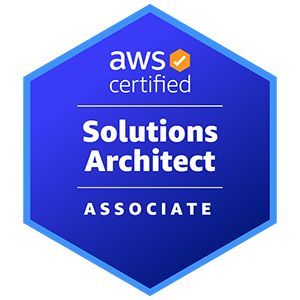

 GomathiNayagam Manakavalan
CONTACT DETAILS : mail4bharane@gmail.com / +16476714484 / Canadian Citizen / Govt Secret Cleared
PROFESSIONAL PROFILE
Mr. GomathiNayagam Manakavalan has expert level experience with the following:
- 19+ years of experience in requirement gathering, solution architecture, design and development and testing etc.
- 10+ years of experience in solution architecture, designing and implementing security solutions and application integration on various Cloud platform.
- 12+ years of experience in development in JAVA/J2EE technologies and application development.
- Extensively involved in High Level Design, System & deployment Architecture implementation.
- Extensive experience implementing Government of Canada Cloud guardrails.
- Strong experience in designing and implementing the integration of multi level security standards using API keys, API Gateway and 2-way SSL.
- Expertise in designing and implementing OIDC based integration with Azure, AWS, OKTA.
- Expert in designing and implementing various Cloud platform setup such as Google Cloud Test environment setup, Azure, and AWS.
- Experience in setting up AWS Workspace for closed enclave and AWS EC2 deployment for hybris applications.
- Expert in design and converting traditional web applications into microservice based serverless applications using AWS services like Lambda, Amplify, API Gateway, Code Build.
- Expert in designing and implementing Azure Blob file share API integration for saving signed documents.
- Expert in designing and implementing Spring based microservices for one-page checkout
- Experience with multi-tier architecture, design and development using J2EE and SOA.
- Strong experience in open-source frameworks like Struts, Hibernate, Spring, Jasper Reports.
- Experience in Dockerizing a microservice app and pushing it to AWS ECR using IaC (Terraform) to create ECR.
- Expertise in setup CI/CD pipeline using GitLab and deploy in AWS Elastic Kubernetes Service.
- Expert in data streaming and handling FTP, SOAP, REST API calls using Enterprise Service Bus(ESB)
- Expert in web-based UI technologies i.e., Angular 7, YahooUI, DWR Ajax, Google Maps & DOJO.
- Expertise in effectively using Confluent Kafka Streams, producer, and consumer for order migration to Dynamodb using AVRO Schema.
- Experience in implementing of reverse proxy configuration, slimming, and trimming of Application Servers for faster bootup. Security validation using IBM Rational Robot.
- Experience in Web Analytics using omniture and Tealium to provide site traffic to business users.
- Ability to communicate architectural decisions and development decisions to the leadership.
- Well versed in Agile methodologies, project scrum and DevOps best practices.
CERTIFICATIONS
AWS Solutions Architect Associate
Microsoft Azure Administrator Associate
Microsoft Azure Solutions Architect Expert
EDUCATION
Bachelor of Technology (B.Tech.) Information Technology -2001 – 2005
SECURITY INFORMATION
Level: Secret
PROJECT EXPERIENCE
- Shared Services Canada - Government
- Senior Technical Lead
April 2024 - Present
Experience:
- Solution design for Role-based access control using Open policy agent and OIDC integration with internal login system.
- CSV bulk upload using AWS Kubernetes Microservice, S3 bucket and dynamodb
- Multi-level Microservice security implementation using Azure AD based JWT token
- Deployment pipeline and setting up branching strategy for github
- High level and low-level design documentation using preparation and management using Lucidchart
- Migration Solution design planning for migrating 1.5million customers from old platform to new platform
- Day to day tech to tech sessions with 13 different integration systems to resolve developer issues and problems during implementation.
- Defining use cases, sprint planning and managing the deliverables and defects.
- Fraudview notification system solution design using kafka and transferring messages to fraud management system.
- 48 Microservice architecture design to serve 4 channels and connecting with 13 integration systems
- Validating Cyberstarr security approval and configuring sonaqube for code coverage. providing detailed weekly reports to higher management.
- Presentation and Getting approvals from Enterprise architect on the solution design.
PROJECT EXPERIENCE
- Shared Services Canada - Government
- Senior Technical Lead
March 2023 - April2024
- Project Description
Integrating GCPass authentication with various govt client applications
Tasks Performed
Experience:
- Support existing applications with day to day technical issues.
- Defining test framework for the GCpass simulator app to make sure the connections are working properly and trigger support emails if there is any issue.
- Documentation and easy to integrate help guide for technical GCpass integration.
- Springboot based Resource provider simulator app creation for demoing the GCpass with internal clients.
- Code deployment pipeline creation using Gitlab and integrating with the deployment strategy and also maintaining periodic deployments in dev, qa and prod.
- Requirement gathering, technical story split up, Spring planning.
- Jira confluence maintenance and creation of project high level design documents.
- Department of Fisheries and Ocean
- Senior Software Developer
March 2022–March 2023
- Project Description
Department of Fisheries and Oceans is a federal institution, responsible for safeguarding Canadian waters and managing Canada's fisheries and oceans resources. Fisheries and Oceans Canada (DFO) helps to ensure healthy and sustainable aquatic ecosystems through habitat protection and sound science. They support economic growth in the marine and fisheries sectors, and innovation in areas such as aquaculture and biotechnology.
Tasks Performed
- Analyzed IT Security Infrastructure such as directory tools and techniques/protocols.
- Designed and implemented corporate login integration using Azure AD B2C.
- Designed and implemented OIDC based integration with GCKey
- Corporate login for internal DFO applications connecting with GCKey as an RP using Azure AD.
- Created Azure DevOps pipeline for the build and deployment
- Leveraged object-oriented programming (OOP) i.e. Java, to develop the springboot application.
- Worked closely with stakeholders from applications and development team to gather requirements for OIDC implementation.
- Participated in weekly workshops to prioritize, analyze, and consolidate reports to propose and implement. This included collaborating with Shared Services Canada to design and implement OIDC integration.
- Perform the implementation of custom developed application (Springboot) that was integrated with Azure AD B2C (RP) with a credential authorized solution (GCCF), which is Government of Canada’s Credential Federation (OIDC token based).
- Dockerizing the springboot application and deploying in Azure web app service by uploading the container image to the Azure container registry.
- Analyzed IT Security Infrastructure tools and techniques.
- Analyzed data and provided advice and reports and assisted the team in implementation strategies.
- Created microservice login app using springboot JDK 11 and integrating with Azure AD
- Created Bicep file for auto deployment of ACR and Azure webapp.
- Documented test cases to perform validations for credential authentications and authorization, while documenting processes and results
- Configured roles created tenants in Azure AD.
- ISED: Innovation Science and Economic Development. Government of Canada
Technical Lead / Developer
August 2021–March 2022
- Project Description
Innovation, Science and Economic Development Canada (ISED) works with Canadians in all areas of the economy and in all parts of the country to improve conditions for investment, enhance Canada's innovation performance, increase Canada's share of global trade and build a fair, efficient and competitive marketplace. They are the federal institution that leads the Innovation, Science and Economic Development portfolio.
Canada Trademark Systems project registers all the trademarks with government of Canada.
Tasks Performed
- Monitored and developed reporting for system utilization and performance metrics.
- Performed lab testing to evaluate fixes, new features, and system interoperability for Canada Trademark systems.
- Prepared technical reports such as IT Security Solutions option analysis and implementation plans for credentials.
- Provided cross training and knowledge transfer to other support personnel for both technical and business teams.
- Provided engineering support through planning and implementing complex changes in large scale multi-tenant networked environments.
- Designed and Implemented Directory, authentication, and authorization protocols such as SAML and OpenID Connect, Identity Management processes, best practices, standards, policies and supporting technologies.
- Created and deployed a full stack covid screening application using AWS Amplify.
- Created microservice with AWS API Gateway, lambda functions connecting to dynamodb.
- Worked closely with technical leads from applications teams and senior developers from the development team to gather requirements.
- Participated in weekly workshops to prioritize, analyze, and consolidate reports to propose and implement
- Using AWS Code commit for the versioning and using serverless scripts to configure the ci, cd pipeline to deploy them in the AWS Cloud environment.
- Configured AWS Route53 for the hostname configuration and redirection to the angular amplify front end URL.
- Led the Implementation of reports to visualize the dynamodb data using AWS Athena, QuickSight for the report generation.
- Created CRUD template using angular for future application migration to use this stack.
- Wrote cloudformation, Serverless scripts to deploy aforementioned AWS stack using AWS Servicecatalog and configured the pipeline.
- LuluLemon NorthAmerica
Technical Lead / Developer
April 2021–July 2021
- Project Description
Lululemon created a ecommerce website which allows users to purchase apparels from online. Architect design implement and deliver create order and update order consumers using Kafka streams and migrating the order to dynamodb (15 million Orders)
Tasks Performed
- Wrote microservice for create / Update order consumers to read the orders from Kafka topic using springboot and push the data to AWS Dynamodb.
- Using AWS KMS service decrypt the private keys passed in the message and decrypt the sensitive date passed in the message.
- Dockerizing the microservice and pushing them to AWS ECR Elastic container registry for deployment.
- Configured the GitLab ci cd pipeline to deploy the microservice into the AWS EKS Kubernetes service.
- Analysis design and implement various error handling scenarios for failure and recovery.
- Bulk load orders from Oracle ATG system and pushing them to dynamodb.
- ISED: Innovation Science and Economic Development. Government of Canada
- Senior Software Engineer
January 2021 – March 2021
- Project Description
Innovation, Science and Economic Development Canada (ISED) works with Canadians in all areas of the economy and in all parts of the country to improve conditions for investment, enhance Canada's innovation performance, increase Canada's share of global trade and build a fair, efficient and competitive marketplace. They are the federal institution that leads the Innovation, Science and Economic Development portfolio.
Canada Trademark Systems project registers all the trademarks with government of Canada.
Tasks Performed
- This division supports and maintains the infrastructure of almost 48 applications which are live on internet. It handles all day-to-day release management, change requests and also defect fixing.
- Developed High level and low-level design solutioning for the End-to-end data transformation.
- Built strategy for maintaining the trademark application for weekly trademark update using the springboot microservice.
- Worked closely with senior management and senior developers various branches to gather requirements.
- Participated in weekly workshops to prioritize, analyze, and consolidate reports to propose and implement
- Supporting the OIDC login integration with SSC.
- Fix defects related to video and audio file upload.
- Analysis to migrate the application to AWS
- Create microservice to upload large files.
- Handling production deployment and verifying the build and deployment WebSphere server.
- Migrating all the legacy applications from http to https.
- Roche: Healthcare
- Senior Software Engineer
- May2020-Dec2020
- Mississauga-Canada
Tasks Performed:
- developed solution design for Role based access control (RBAC) using Open policy agent and OIDC integration with internal login system.
- Design and implement Targeted offers csv bulk upload using AWS Kubernetes Microservice, S3 bucket and DynamoDB.
- Design and implement Multi-level Microservice security using Azure AD based JWT Token.
- Build and perform deployment pipeline and setting up branching strategy for GitHub.
- Develop High level & low-level design documentation leveraging Lucid chart as design tools.
- Develop solution design to plan the migration of 1.5 million customers from old to new platform.
- Day-to-day tech to tech sessions with 13 different integration systems to resolve developer issues and problems during implementation.
- Fraudview notification system solution design using Kafka and transferring messages to fraud management system.
- Design 48 Microservice architecture to serve 4 channels and connecting with 13 integrated systems.
- Validate Cyberstarr security approval and configuring SonarQube for code coverage. providing detailed weekly reports to higher management.
- Prepare presentation for solution design to obtain approvals from Enterprise architect (EA).
- Define use cases and participate in sprint planning.
- Manage deliverables and help the team with defects troubleshooting.
- ISED: Innovation Science and Economic Development. Government of Canada
- Senior Software Developer
February 2020 – May 2020
- Project Description
Innovation, Science and Economic Development Canada (ISED) works with Canadians in all areas of the economy and in all parts of the country to improve conditions for investment, enhance Canada's innovation performance, increase Canada's share of global trade and build a fair, efficient and competitive marketplace. They are the federal institution that leads the Innovation, Science and Economic Development portfolio.
During covid time ISED an security measure to self attest few covid questionnaires. In order to capture it we build a simple webapp where the users can answer the questions. This solution was deployed in AWS amplify. Amplify also helps to improves the deployment timeline.
Tasks Performed
- This division supports and maintains the infrastructure of almost 48 applications which are live on internet. It handles all the day to day release management, Change requests and also defect fixing.
- Deploying and managing releases of the applications in various environments. DEV, QA, UAT, PROD.
- Migrating apps from on premise to the Open Shift Cluster.
- Worked closely with technical leads from applications teams and senior developers from the development team to gather requirements for Canada Trademarks implementation.
- Participated in weekly workshops to prioritize, analyze, and consolidate reports to propose and implement
- Supporting the OIDC login integration with SSC.
- Fix defects related to video and audio file upload.
- Analysis to migrate the application to AWS
- Create microservice to upload large files.
- Implemented readiness and liveness probes for applications health check and auto restarts during deadlocks in OpenShift.
- Migrated 6 application which are on the older version of jdk to the JDK1.8 upgrade.
- Migrated 4 spring application from version 3.X to 4.X and hibernate too.
- Upgrading all the pom files for the jdk8 supported libraries like commons, log4j.
- Defect fixing front end applications which uses angular and also fixing few backend issues.
- Deloitte: Government of Canada (CBSA)
- Senior Software Developer
August 2019 – November 2020
- Project Description
Base Architecture setup with hybris 1905 and converting the application to a single page application using the Spartacus Angular framework
Tasks Performed
- Assist in implementation strategies for various springboot applications.
- Leveraged the citizen Engagement Accelerator in hybris
- Analyze IT Security Infrastructure tools such as firewalls and endpoint security.
- Analyze data and provide advice and reports to senior directors.
- Assist in implementation strategies for single sign on.
- OKTA- Hybris SAML single sign-on implementation POC for using the GCKey single sign-on
- WCMS components creation for all the content pages
- Custom automated impex creation for converting excel to impex
- Worked on the project estimation and story split up
- AWS workspace setup for closed enclave environment using the Linux centos
- Worked closely with solutions architects, applications leads and senior management to gather requirements for SAML implementation. He participated in weekly workshops to prioritize, analyze, and consolidate reports to propose and implement
- Dockerizing hybris environment and Jenkins integration POC for code pipeline and deployment in AWS EC2
- Build and Deployment handling in SAP Cloud CVV2 environment.
- Integration with SAP ECC services via CPI using the hybris out of the CPI Integration services.
- Implemented Inboud / Outbound calls for order creation and updation via CPI REST service call using edmx files by configuring the inbound and outbound impex files.
- Worked with SAP Commerce Cloud CCV2
- GITHUB and deployment management.
- Great West Life
- Technical Architect /Lead
March 2018 – May 2019
- Project Description
Flexbox is an online b2b site where you can purchase insurance for small business industry whose employee count is from 2 to 20. You can choose the insurance package from the product selection page and once you place the order by the insurance premium will be de debited using preauthorized payment.
Tasks Performed
- Salesforce integration/implementation with hybris using authentication token (SAML) for login management for pre-authorized debit banking validation
- One time charge entry setup using Financial Accelerator for Insurance domain
- Custom hybris java strategy pattern implementation for validating business rules before order submission
- Provide network security expertise on multi-disciplinary project teams to develop design alternatives for credential management relating to B2B online site.
- Provide operational support for web content filtering infrastructure by performing change and holding weekly workshops.
- Review perimeter security requirements and develop cost effective responses.
- Review, assess, develop alternatives, and recommendations for perimeter security approaches, technology, and processes.
- Provide expertise as well as design and implement solutions including Directory Technologies, Directory ETL systems, Authentication and Authorization Systems, Identity Management Systems, Credentials Management systems as well as business applications integrations.
- Documented test cases to perform validations for credential authentications and authorization.
- Ensured standardization and consistency of data integrity by documenting processes and results; configured system changes as needed
- Merge cart, clone cart and handling multiple carts per user for multi quote management
- Integration of angular js module to hybris project. Defining API spec in YAML format
- Setting up initial data impex for the project base data and catalog data
- Azure cloud blob file upload using API for saving the policy files
- Technologies: SAP Hybris, Java, Azure Blob, Salesforce, DocuSign pdf, Vue.js
- Multi site implementation for US and CANADA
- Home Depot
- Technical Lead
April 2017 – February 2018
Tasks Performed
- Home depot .ca is product website where you can purchase the products which helps to build your house
- Hot Folder Product Impex creation for dynamic product uploads to hybris system
- Hybris migration from 6.4 to 6.5 & also migration from 6.5 to 6.6
- Complete design and implementation of one-page checkout for Home Depot using microservices
- BigMoney, PayPal Integration for checkout.
- Backoffice widgets creation for custom Media Image authoring for business purpose.
- Custom Classification catalog creation for product feature extension.
- Bloomreach Integration for product recommendations.
- Scene7 Integration for Image DAM Management.
- Administration of the various systems including collaborating with technical staff to coordinate implementations, upgrades, maintenance, and patches as well as documenting processes, use cases and results.
- Provide network security expertise on multi-disciplinary project teams to develop design alternatives for credential management relating to B2B online site.
- Provide operational support for web content filtering infrastructure by performing change and holding weekly workshops.
- Review perimeter security requirements and develop cost effective responses.
- Review, assess, develop alternatives, and recommendations for perimeter security approaches, technology, and processes.
- Provide expertise as well as design and implement solutions including Directory Technologies, Directory ETL systems, Authentication and Authorization Systems, Identity Management Systems, Credentials Management systems as well as business applications integrations.
- Google cloud platform setup for test environments.
- Custom WCMS component creation for Banners maintenance.
- Extending Data Model and out of the classes for custom implementation.
- Leveraging the smartedit functionality for the category tree creation using Angular and REST services.
- Implemented Spring OAuth 2.0 Security Migration
- Technologies: SAP Hybris, Spring, Java, Google Cloud, Scene 7 DAM. OAuth 2.0, Angular
- TELUS
- Technical Lead
October 2016 – March 2017
Tasks Performed
- ATG ecommerce application for Telus and Koodo mobile and plan purchasing online site.
- Handling build and deployment of the ATG application
- Migration of the ATG from version 9 to 11
- Fixed all the build and server startup issues with JBOSS
- Oracle database migration
- Spring based application for the pricing import
- Technologies: JBOSS, Java, Spring, Oracle ATG, Junit
- Sapient
- Technical Solution Lead
August 2014–September 2016
Tasks Performed
- Leveraged the citizen Engagement Accelerator in hybris
- Kuoni Mice is hotel booking website specifically designed for conference bookings from affiliate site.
- Shoppers Drug Mart RxFill - Used to refill the prescriptions online.
- Took ownership on complete ATG checkout flow and handled the team of 10
- ATG Express checkout implementation
- Collaborated with development Ops and IT teams in the testing of the system upgrades while documenting processes and results processes and results.
- Integrating with USA/Canada qos address standardization
- Split shipping groups for sending gift cards separately.
- Paypal payment integration using HOP and ajax calls
- Perks card implementation for offers on order level
- Setting up multisite repository for different conferences
- Setting up cache repository to hold hotel info.
- Spring REST based implementation for the Shoppers drug mart RX refill
- Technologies: IBM WebSphere, Oracle ATG. GIT, Spring, Jquery.js
- CGI
- Development Lead
May 2012 – June 2014
Tasks Performed
- Provide network security expertise on multi-disciplinary project teams to develop design alternatives for credential management relating to B2B online site.
- Provide operational support for web content filtering infrastructure by performing change and holding weekly workshops.
- Review perimeter security requirements and develop cost effective responses.
- Worked on setting up targeters, slots and scenarios based on the users localization.
- Worked on setting up media repository to add or modify different shop contents dynamically from BCC
- Invoking various soap service calls which is used to fulfill the order.
- Worked on Tealium and Omniture for the site analysis
- Dynamic buyflow customization.
- Defining the affiliate flows based on the affiliate url
- Bulk data processing using Oracle simple procedures.
- Spring SOAP Web service integration to get google ad keywords report to the user.
- Technologies: Weblogic, Oracle, AJAX, REST, JSON, Servlet, ATG, Omniture, Spring. JPA
- Sapient (JC Penny)
- Senior Software Engineer
November 2010 – April 2012
Tasks Performed
- JC Penney Digital Platform is a Big implementation of an e-commerce application
- Assist in implementation strategies for various springboot applications.
- Leveraged the citizen Engagement Accelerator in hybris
- Assist in implementation strategies for single sign on.
- Extensively involved in High Level Design of various modules including check-out, integrations.
- One of the active member in design review team.
- REST Service implementation integrating with Spring - CXF framework.
- Creation of work breakup structure & effort estimation
- Hosting stand-up meeting with develop team every day to resolve day-to-day issues.
- Defect triage with QC team and providing directions to development team
- Supporting deployment team with application configuration and setup.
- End to end implementation of Paypal integration.
- Worked with architect on the system architecture documentation.
- Continuous communication with onsite coordinator to discuss requirements & execution plan.
- Technologies: Weblogic, Oracle, AJAX, REST, JSON, Servlet, ATG, Junit.
- Cognizant
- Senior Software Engineer
October 2009 – October 2010
Tasks Performed
- Involved in developing POC of Carts, personalization and Price Engine Customization based on the requirements.
- Merchandizing setup (BCC).
- Custom server-side validation.
- Custom Data Loader for importing store info into the system.
- High Level design and Low-level design preparations
- Technologies: Weblogic, MySQL, AJAX, JSON, Servlet, ATG, XML,Junit.
- Infosys
- Senior Software Engineer
October 2008–September 2009
Tasks Performed
- IENGAGE is a SAAS product which mainly develop for Apparel vendors. Where we Concentrate more on B2C. The site also provided promotions based on personalization (CISCO)
- Involved in Module development of Carts and personalization
- AJAX integration with ATG. ATG Pipeline Tweaking
- Attended training for ATG development and configuration, ATG Search Engine
- Involved in the DLD (Detailed level Design) and HLD (High Level Design)
- Configurable and pluggable validation framework
- Reverse proxy Setup using Apache server
- Multinational i18n configuration
- Configuration of comergent for multiple Storefronts.
- Attended training in Sterling Commerce for comergent Coding and Configuration
- Technologies: JBOSS, Oracle, AJAX, JSON, Servlet, ATG, XML, Sterling, Open ESB, SOAP, Junit
- Wipro
- Software Engineer
October 2007–September 2008
Tasks Performed
- Improving Heart Failure patient clinical outcomes by Predicting onset of decomposition by monitoring vital signs. Reducing follow up workload of physicians and patients Imparting peace of mind to patients.
- Involved in the Architectural design for implementing the components in various levels.
- Implementation of EJB, Mule ESB, web services and Hibernate annotation.
- Worked as a key person to do the R&D(Research and Development) to add values to the project
- Worked on Yahoo UI implementation and Integration of google search and google Maps
- Worked on Sync the Kml file with the IPAQ Device.
- Performed Report Generation using JfreeCharts and Jasper Reports.
- Technologies: Java, JSP, Servlets, XML, Jfree Charts, Jasper Reports, Spring, Ajax, Axis 2.0. SOA, Enterprise Service Bus (MULE ESB), JBOSS, Tomcat, MySQL, Hibernate Annotation, Yahoo UI, Google Maps,Junit
- SOFTWARE OFFSHORE TEAM PVT LTD
- Software Developer
- Feb2007-Oct2007
- Trivandrum - India
Tasks Performed
- Challenge All in One - ERP implementation for a Netherlands client.
- Base Architecture building Struts and Hibernate
- Multi Language support
- Barcode Generation
- Error log handling
- Struts validation implementation
- Generalized Tag library Generation.
- Worked on the module development.
- Technologies: Java, JSP, Servlets, XML, Struts, Spring, Ajax, Axis 2.0. SOA, Enterprise Service Bus (MULE ESB), Weblogic, Tomcat, MySQL, Hibernate Annotation, Yahoo UI, Google Maps
- JADIAN TECHNOLOGIES
- Software Developer
- Jul2005-Feb2007
- Chennai - India
Tasks Performed
- AMS - Automated Messaging system software to send group messaging to any enterprise.
- Involved in development of various concepts in Java, Java Servlets, Beans, and DAO’s.
- Involved in complete Development of the modules using struts.
- Developed AMS ANT Installer.
- Bug fixing
- Technologies: Java, Struts, Hibernate, Mysql, Intellij, Netbeans, Tomcat, Xml, Junit